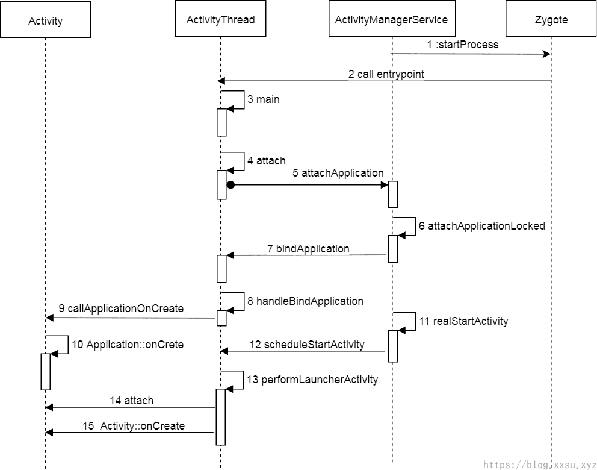

Zygote详解
[TOC]
Zygote进程
Zygote进程通过克隆的方式创建子进程，使用fork方法，会从父进程进行资源的继承；并且在启动的时候会创建 Java ART虚拟机，加载java进程所需的所有系统资源。
App_main -> main()
App_main.cpp cmds\App_process
int main(int argc, char* const argv[]) |
App_main主要工作：
- 创建了 ART对象，传入虚拟机所需的选项；
- 解析
zygote启动参数； - 调用
runtime.start函数，根据启动 zygote 还是命令行（className），进入ZygoteInit或者RuntimeInit参数分支。
if (zygote) { |
提示
app_process可使用命令行调用，启动一个 Java 类，并调用main方法；- argc：参数个数，argv[ ]：参数指针数组;
className为空才在zygote模式下
ZygoteInit开始
开机一般会打印这行日志
D AndroidRuntime: >>>>>> START com.android.internal.os.ZygoteInit uid 0 <<<<<< |
如果遇到不能开机的情况，这行Log没有打开，极有可能是底层的问题。
void AndroidRuntime::start(const char* className, const Vector<String8>& options, bool zygote) |
进程创建
当启动一个Activity的时候，发现Activity所在进程没有被创建，就会调用这个API进程进行创建。Process.start()方法是阻塞操作，等待直到进程创建完成并返回相应的新进程pid，才完成该方法。
public final Process.ProcessStartResult start(@NonNull final String processClass, |
startViaZygote
/** |
zygoteSendArgsAndGetResult
将参数列表发送到Zygote进程，这将启动一个新的子进程，并返回孩子的pid。
@如果流程由于任何原因启动失败，则抛出ZygoteStartFailedEx
/** |
attemptZygoteSendArgsAndGetResult
private Process.ProcessStartResult attemptZygoteSendArgsAndGetResult( |
zygote 进程 main
zygote 进程采用socket通信机制，代码如下
/ ** |
attemptUsapSendArgsAndGetResult方法
private Process.ProcessStartResult attemptUsapSendArgsAndGetResult( |
流程图

-------------本文已结束感谢您的阅读-------------
文章作者：BlueSky
本文链接：https://xxsu.xyz/article/8b3b35/
版权声明：本博客所有文章除特别声明外，均采用 CC BY-NC-SA 4.0 CN 许可协议。转载请注明出处！
分享